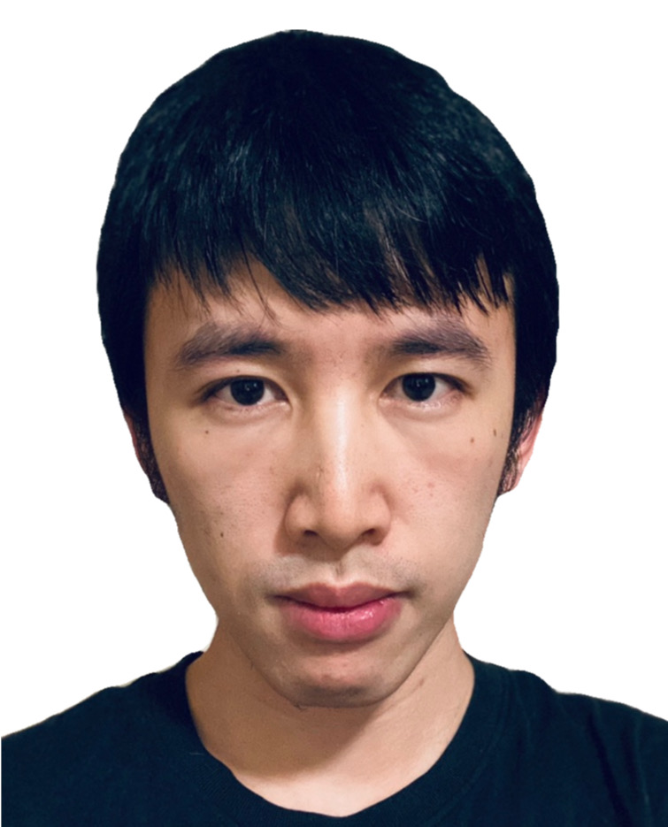

Zhenpei Yang
Ph.D. in Computer Science
UT Austin
Email: yzp@utexas.edu
Mail: 2317 Speedway, Austin, TX 78712
Office: GDC 5.504D
|
|
 |
Short Bio
I am a Research Scientist at Waymo. I received my PhD degree in 2022 from the Department of Computer Science at The University of Texas at Austin, where I was advised by Prof. Qixing Huang. I received my B.Eng. degree from the Department of Automation at Tsinghua University in 2016.
I was an Apple Scholar in the area of Computer Vision and Augmented Reality.
Research
- Implicit Autoencoder for Point Cloud Self-supervised Representation Learning
Siming Yan, Zhenpei Yang, Haoxiang Li, Li Guan, Hao Kang, Gang Hua, Qixing Huang
[arxiv][code]
- HM3D-ABO: A Photo-realistic Object-centric Multi-view Dataset
Zhenpei Yang, Zaiwei Zhang, Qixing Huang
[tech report][code]
- FvOR: Robust Joint Shape and Pose Optimization for Few-view Object Reconstruction
Zhenpei Yang, Zhile Ren, Miguel Angel Bautista, Zaiwei Zhang, Qi Shan, Qixing Huang
Computer Vision and Pattern Recognition (CVPR) 2022
[paper][supp][code]
- MVS2D: Efficient Multi-view Stereo via Attention-Driven 2D Convolutions
Zhenpei Yang, Zhile Ren, Qi Shan, Qixing Huang
Computer Vision and Pattern Recognition (CVPR) 2022
[arxiv][project page][code]
- HPNet: Deep Primitive Segmentation Using Hybrid Representations
Siming Yan, Zhenpei Yang, Chongyang Ma, Haibin Huang, Etienne Vouga, Qixing Huang
International Conference on Computer Vision (ICCV) 2021
[paper][code]
- StruMonoNet: Structure-Aware Monocular 3D Prediction
Zhenpei Yang, Li Erran Li, Qixing Huang
Computer Vision and Pattern Recognition (CVPR) 2021
[paper]
- Product Video Synthesis from Four Sparse Views
Zaiwei Zhang Zhenpei Yang, Linjie Luo, Qixing Huang
Manuscript
- Surfel-GAN: Synthesizing Realistic Sensor Data for Autonomous Driving
Zhenpei Yang, Yuning Chai, Dragomir Anguelov, Yin Zhou, Pei Sun, Dumitru Erhan,
Sean Rafferty, Henrik Kretzschmar
Computer Vision and Pattern Recognition (CVPR) 2020 (oral)
[paper][media]
- Extreme Relative Pose Network under Hybrid Representations
Zhenpei Yang*, Siming Yan*, Qixing Huang
Computer Vision and Pattern Recognition (CVPR) 2020 (oral)
[paper][code]
- Extreme Relative Pose Estimation for RGB-D Scans via Scene Completion
Zhenpei Yang, Jeffrey Z.Pan, Linjie Luo, Xiaowei Zhou, Kristen Grauman, Qixing Huang
Computer Vision and Pattern Recognition (CVPR) 2019 (oral)
[paper] [code]
- Deep Generative Modeling for Scene Synthesis via Hybrid Representations
Zaiwei Zhang, Zhenpei Yang, Chongyang Ma, Linjie Luo, Alexander Huth,
Etienne Vouga, Qixing Huang
ACM Transactions on Graphics (TOG) 2018.
[paper][talk]
- LSTM-based Whisper Detection
Zeynab Raeesy, Kellen Gillespie, Zhenpei Yang, Chengyuan Ma, Thomas
Drugman,
Jiacheng Gu, Roland Maas, Ariya Rastrow, Björn Hoffmeister
[paper] [media]
- Learning Generative Neural Networks for 3D Colorization
Zhenpei Yang, Lihang Liu, Qixing Huang
Thirty-second AAAI Conference of Artificial Intelligence (AAAI) 2018 (oral)
[paper]
Education
- Aug. 2016 - Aug. 2022: Ph.D. student, UT Austin, USA
- Aug. 2014 - Feb. 2015: Exchange student, Eidgenössische Technische Hochschule Zürich (ETHZ), Switzerland
- Aug. 2012 - June. 2016: Department of Automation, Tsinghua University, China
Experience
- Apple VCV Science, Austin (Remote), June. 2021 - May. 2022
- Waymo Research, Mountain View, June. 2019 - Dec. 2019
- Amazon Alexa, Boston, May. 2017 - Aug. 2017.
Press
Service
- Reviewer: CVPR, ICCV, ECCV, 3DV, AAAI, SIGGRAPH, ICRA, ICLR, TPAMI
{kind=link}